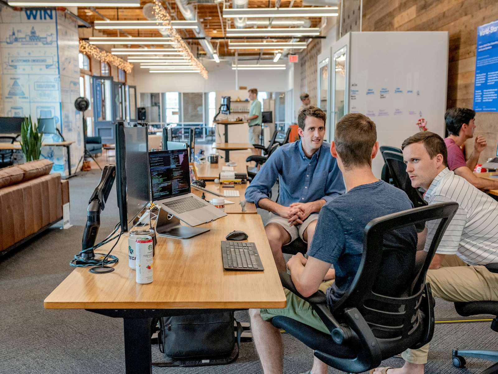
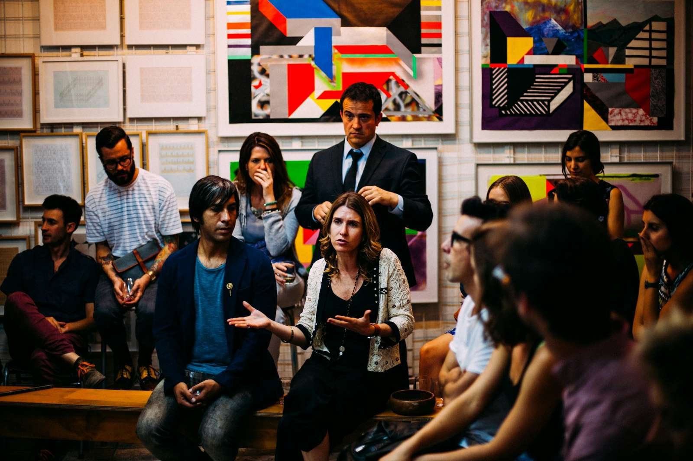
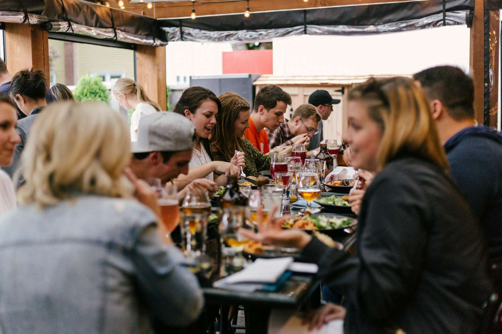

Featured · Daniel Reyes
Psalter.
Scripture memory with spaced repetition. Open source, and growing fast.
1,900beta users
41comments
Contributorsopen source
Banaro connects Christian founders, engineers, designers and product managers across Toronto and the GTA — so you can find collaborators, share what you’re making, and meet in person.
Two are better than one.
Find local builders by skill, role and neighbourhood.

Share what you’re building, ask for feedback, find collaborators.

Demo nights, prayer breakfasts and workshops across the GTA.

Meet a co-founder, an advisor or a contributor who shares your faith.


312 projects in progress, each asking for exactly what it needs next.
Scripture memory with spaced repetition. Open source, and growing fast.
1,900beta users
41comments
Contributorsopen source
Volunteer scheduling for GTA food banks.
by Amara Osei · Beta · 6 food banksLooking for technical co-founder
23 comments · Give feedbackCheck-in and RSVP for small church events.
by Grace Liu · PrototypeLooking for frontend engineer
12 comments · Give feedbackPlain-language giving reports for charities.
by Noah Fischer · Pilot · 4 charitiesLooking for advisor (CRA compliance)
9 comments · Give feedbackMentor matching for newcomers to Canada.
by Sofia Marquez · Pilot · 3 churchesLooking for contributors
17 comments · Give feedbackLow-cost water-quality sensors for rural partners.
by Elijah Brooks · Hardware prototypeLooking for co-founder
6 comments · Give feedbackA gentle rest and screen-time coach.
by Ruth Alvarez · DesignLooking for iOS engineer
14 comments · Give feedback
Thu 15 Oct 2026 · 7:00–9:30 pm
Centre for Social Innovation, 192 Spadina Ave

Sat 17 Oct · 8:00–9:30 am
St. Matthew’s Hall, Leslieville
Tue 20 Oct · 6:30–8:30 pm
Markham Village Library, community room

Thu 29 Oct · 7:00–9:00 pm
The Assembly Hall, Liberty Village
Tell us what you’re building and who you need. We’ll suggest three builders nearby every Monday.
96 co-founder matches made in 2026.
“Within a week I was advising two founders, both a streetcar ride from my house.”
Hannah KowalskiUX researcher, Roncesvalles